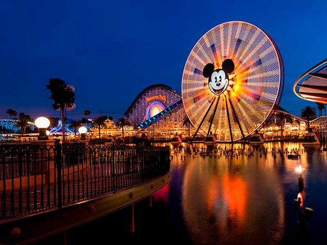

.jpeg) Orlando, Florida
Orlando is one of the most popular holiday spots in the US, home to some of the world's best-known
theme parks like Walt Disney World, Universal Studios, and SeaWorld. It is an absolute paradise of
pure entertainment, brimming with games and outdoor activities from exciting rides and attractions
to shopping and dining out. Walt Disney World is the largest and most visited theme park resort in
the whole world, holding four major theme parks: Magic Kingdom, Epcot, Hollywood Studios, Animal
Kingdom, two water parks, and multiple hotels and resorts. Hogwarts Castle and Diagon Alley are
locations of enchanting experiences inside Universal Studios Orlando's Wizarding World of Harry
Potter. SeaWorld Orlando merges animal interactions, demonstrations, and rides on marine life.
Beyond the theme parks, Orlando offers a very vibrant dining scene, with hundreds of restaurants,
bars, and nightclubs working out for every taste and budget. With sun-drenched surroundings and
pristine beaches, the city is recommended as an ideal destination to spend quality time with family
or get some thrills.
Orlando, Florida
Orlando is one of the most popular holiday spots in the US, home to some of the world's best-known
theme parks like Walt Disney World, Universal Studios, and SeaWorld. It is an absolute paradise of
pure entertainment, brimming with games and outdoor activities from exciting rides and attractions
to shopping and dining out. Walt Disney World is the largest and most visited theme park resort in
the whole world, holding four major theme parks: Magic Kingdom, Epcot, Hollywood Studios, Animal
Kingdom, two water parks, and multiple hotels and resorts. Hogwarts Castle and Diagon Alley are
locations of enchanting experiences inside Universal Studios Orlando's Wizarding World of Harry
Potter. SeaWorld Orlando merges animal interactions, demonstrations, and rides on marine life.
Beyond the theme parks, Orlando offers a very vibrant dining scene, with hundreds of restaurants,
bars, and nightclubs working out for every taste and budget. With sun-drenched surroundings and
pristine beaches, the city is recommended as an ideal destination to spend quality time with family
or get some thrills.

Anaheim, California
Anaheim has Disneyland, one of the most famous amusement parks in the world. As the first
Disney-themed amusement park, it is home to two of the oldest rides in a Disney theme park: Space
Mountain and Matterhorn Bobsleds, along with some of the more modern and popular attractions, such
as Star Wars and Marvel franchises. In addition to Disneyland, this city has plenty of other
options: family-friendly entertainments include the Anaheim Convention Center, the largest
convention center on the West Coast, and the Anaheim Packing District, a revitalized historic citrus
packing district with restaurants, shops, and a weekly farmers market. The Honda Center, home of the
Anaheim Ducks hockey team, hosts a year-round list of sporting events and concerts. Besides, it's
only a short drive from Los Angeles and the rest of Southern California, so Anaheim is an ideal base
to visit all this part of California has in store: from Hollywood to the beaches of Orange County.
.jpeg) Las Vegas, Nevada
Compared to anywhere else on Earth, Las Vegas stands as a much more vivid and symbolic city in terms
of casinos, entertainment, and nightlife. It offers a great combination of opulent resorts,
world-class shows, endless dining opportunities, shopping, and entertainment. The Las Vegas Strip is
where all the action takes place, with towering hotels and casinos like the Bellagio, Caesars
Palace, and MGM Grand lining up the road. People can gamble in casinos, get the best entertainment,
comedians, or if tourists so wish, they can revel in the very lively art and food scene of the city.
Off the Strip lie plenty of places to engage in outdoor activities—hiking at the nearby Red Rock
Canyon and Lake Mead—and unique cultural attractions that give a view of the Neon Museum and the Mob
Museum. The warm climate and exciting atmosphere make this city a perfect destination for anyone in
search of entertainment, fun, and unforgettable experiences.
Las Vegas, Nevada
Compared to anywhere else on Earth, Las Vegas stands as a much more vivid and symbolic city in terms
of casinos, entertainment, and nightlife. It offers a great combination of opulent resorts,
world-class shows, endless dining opportunities, shopping, and entertainment. The Las Vegas Strip is
where all the action takes place, with towering hotels and casinos like the Bellagio, Caesars
Palace, and MGM Grand lining up the road. People can gamble in casinos, get the best entertainment,
comedians, or if tourists so wish, they can revel in the very lively art and food scene of the city.
Off the Strip lie plenty of places to engage in outdoor activities—hiking at the nearby Red Rock
Canyon and Lake Mead—and unique cultural attractions that give a view of the Neon Museum and the Mob
Museum. The warm climate and exciting atmosphere make this city a perfect destination for anyone in
search of entertainment, fun, and unforgettable experiences.
.jpeg) New York City, New York
It's a world hub of culture, dining, shopping, and so much more. While visitors could see the iconic
sights like the Statue of Liberty, Central Park, or the Empire State Building, it would also not be
out of place to get off the beaten path into outer, up-and-coming neighborhoods, which have their
own vibrant arts and culinary scenes. From Broadway shows and world-class museums to high-end
fashion and street food, New York City offers unequaled choices for experiences. This city is filled
with energy unrivaled by any other and holds diversity in every neighborhood, exhibiting different
characters and attractions. Manhattan is home to the financial district and the theater district,
along with other famous places like the 9/11 Memorial and Museum; Brooklyn has hipster culture with
artisanal food-scene-luring gastropubs and beautiful parks pleasing to people, like Prospect Park;
Queens represents a melting pot of all cultures down to the neighborhoods, while having visions of
breathtaking beauty like Flushing Meadows-Corona Park. This is New York City—the city that never
sleeps, with countless opportunities for exploration and discovery at every turn.
New York City, New York
It's a world hub of culture, dining, shopping, and so much more. While visitors could see the iconic
sights like the Statue of Liberty, Central Park, or the Empire State Building, it would also not be
out of place to get off the beaten path into outer, up-and-coming neighborhoods, which have their
own vibrant arts and culinary scenes. From Broadway shows and world-class museums to high-end
fashion and street food, New York City offers unequaled choices for experiences. This city is filled
with energy unrivaled by any other and holds diversity in every neighborhood, exhibiting different
characters and attractions. Manhattan is home to the financial district and the theater district,
along with other famous places like the 9/11 Memorial and Museum; Brooklyn has hipster culture with
artisanal food-scene-luring gastropubs and beautiful parks pleasing to people, like Prospect Park;
Queens represents a melting pot of all cultures down to the neighborhoods, while having visions of
breathtaking beauty like Flushing Meadows-Corona Park. This is New York City—the city that never
sleeps, with countless opportunities for exploration and discovery at every turn.
.jpeg) Los Angeles, California
Los Angeles is a vast, sprawling city attested to by its Hollywood heritage, beautiful beaches, and
eclectic neighborhoods. Among the main sights are the iconic Hollywood Sign and Getty Center, the
famous Santa Monica Pier, and an artistic, musical, and food culture that makes this city thrive.
Hollywood is the hub of the movie and entertainment industry; it hosts the well-known attractions,
Hollywood Walk of Fame, Dolby Theatre—the location where the Academy Awards takes place—alongside
studios and other facilities for productions. Downtown LA is a mix of historic and modern
architecture—Walt Disney Concert Hall and Grand Central Market dot the area. From the trendiest
shops along Melrose Avenue to the beaches in Malibu, there is wonderful exploring and discovering to
be had in the neighborhoods of this city. Being a good starting point, Los Angeles has access to
natural attractions such as the Santa Monica Mountains or the Pacific Coast that would interest any
outdoor activity enthusiast.
Los Angeles, California
Los Angeles is a vast, sprawling city attested to by its Hollywood heritage, beautiful beaches, and
eclectic neighborhoods. Among the main sights are the iconic Hollywood Sign and Getty Center, the
famous Santa Monica Pier, and an artistic, musical, and food culture that makes this city thrive.
Hollywood is the hub of the movie and entertainment industry; it hosts the well-known attractions,
Hollywood Walk of Fame, Dolby Theatre—the location where the Academy Awards takes place—alongside
studios and other facilities for productions. Downtown LA is a mix of historic and modern
architecture—Walt Disney Concert Hall and Grand Central Market dot the area. From the trendiest
shops along Melrose Avenue to the beaches in Malibu, there is wonderful exploring and discovering to
be had in the neighborhoods of this city. Being a good starting point, Los Angeles has access to
natural attractions such as the Santa Monica Mountains or the Pacific Coast that would interest any
outdoor activity enthusiast.